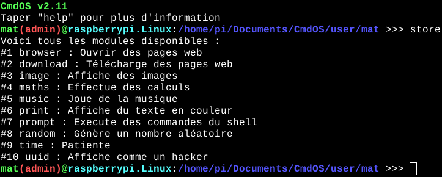
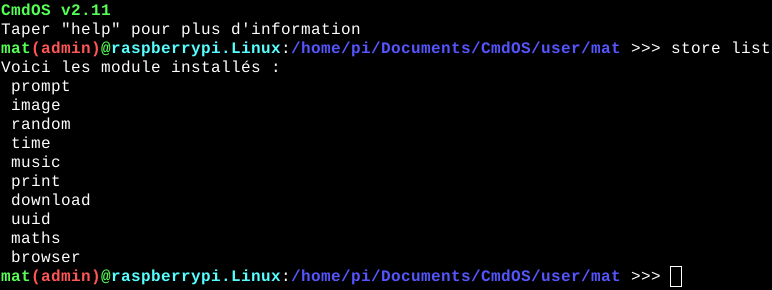

CmdOS dispose d'un magasin de module accessible en tapant "store" :
Vous pouvez télécharger des modules avec la commande : store install nom_du_module
Vous pouvez supprimé des modules avec la commande : store uninstall nom_du_module
Vous pouvez voir les informations d'un module avec la commande : store info nom_du_module
Vous pouvez voir les modules installés avec la commande : store list
Pour éxécuter un module, taper son nom suivie de tous ses arguments séparés par des espaces.
Pour créer votre propre module, aller içi.